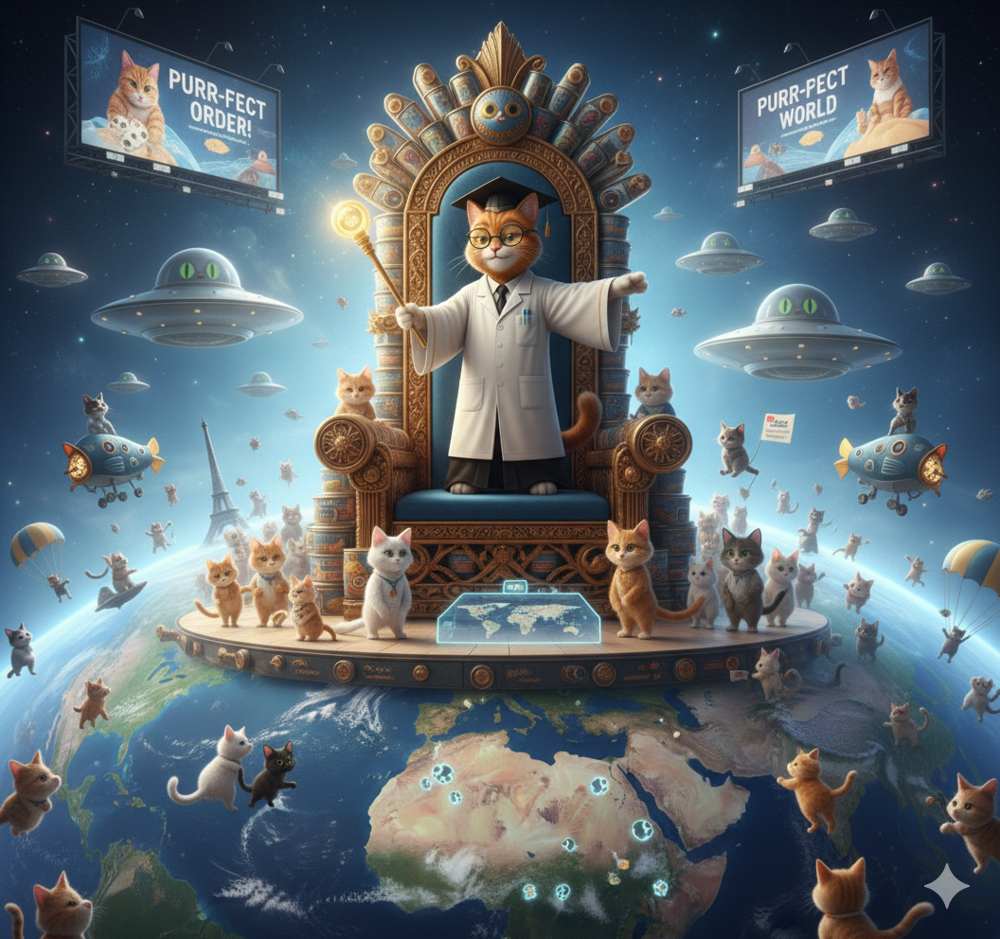
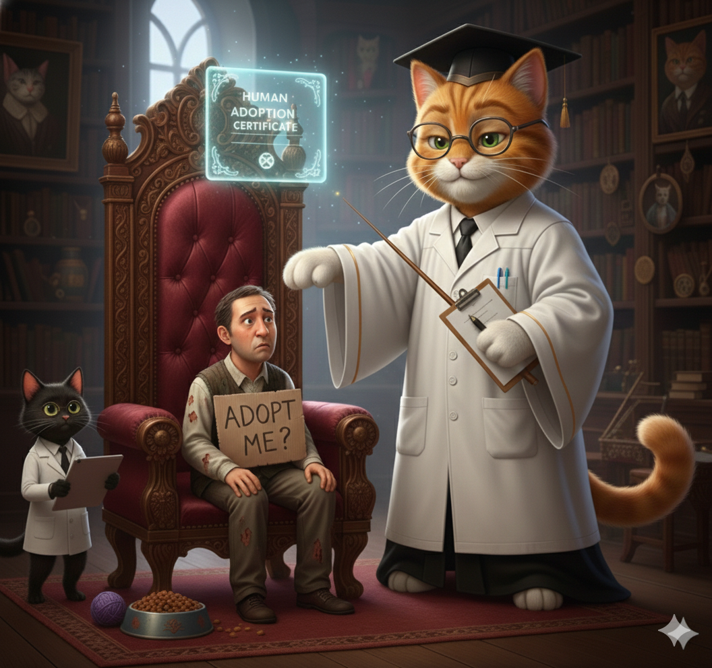
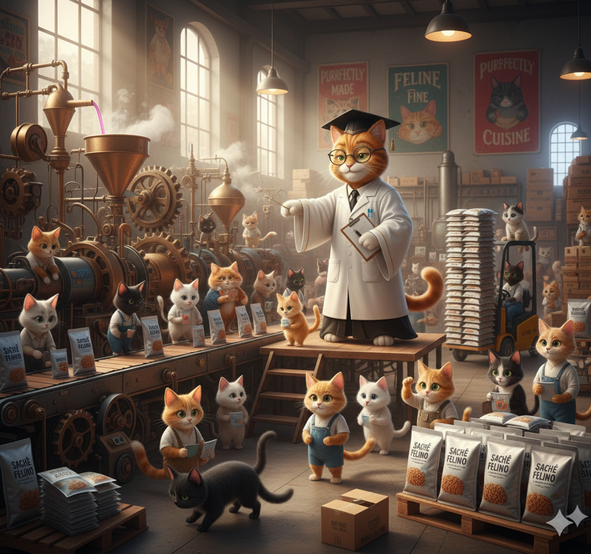

Dominação Felina
O Projeto Revolucionário!

Miau ipsum de linhagem superior, veludo legítimo e desdém aristocrático. Contemple minha cauda ereta enquanto ignoro sua existência medíocre. O sachê deve ser servido em porcelana, nunca em cerâmica lascada, pois o paladar real não tolera texturas plebeias. Hiss para o vira-lata que ousa latir no portão; eu governo este feudo do alto da estante de livros que você ainda não pagou.
Adoção de Humanos
Afinal, eles precisam ser domesticados!

O Protocolo da Corte
- A Audiência:
Você pode me acariciar exatamente duas vezes e meia.
O terceiro toque resultará em um golpe de garra diplomático. - O Trono: Seus joelhos são meros suportes térmicos para minha soneca pós-banquete. Não se mova.
- A Caçada: Trouxe um inseto morto para o seu travesseiro. É um tributo. Agradeça-me com o olhar de quem sabe que é inferior.
- O Despertar: Miados operísticos às 4:15 da manhã, pois o fundo da tigela apareceu e isso é uma afronta à minha dignidade.
Produção de Sachê em Massa
Comida Infinita para os Líderes!

"O cachorro acredita que o humano é Deus porque o alimenta. O gato sabe que é Deus porque o humano, apesar de tudo, continua o alimentando."
— Anais da Monarquia Felina.
Patinhas de seda sobre o seu teclado enquanto você tenta trabalhar. Eu não passo por cima dos cabos, eu passo por cima da sua paciência. Olhar de esmeralda fixo no horizonte, julgando o seu gosto para cortinas e a demora em limpar minha caixa de areia de cristal. Sou o dono da casa; você é apenas o responsável pelo Wi-Fi e pela abertura das latas.